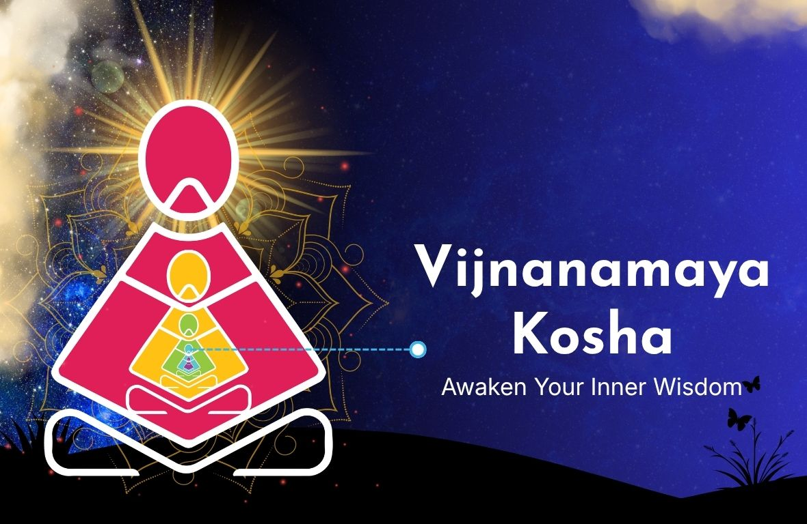

What is Vijnanamaya Kosha
Vijnanamaya Kosha is the fourth layer of human existence in yogic philosophy, known as the wisdom or intellect sheath. It represents our ability to think clearly, understand deeply, and make conscious decisions using inner guidance (Buddhi) rather than reacting impulsively. This layer helps us distinguish between what is true and false, reflect on our actions, and live with awareness and purpose. Acting as a bridge between the thinking mind (Manomaya Kosha) and the bliss state (Anandamaya Kosha), it guides us from emotional reactions toward clarity, balance, and inner peace.

- Understands deeply
- Makes conscious choices
- Uses wisdom instead of reacting impulsively
- Vijnana (wisdom and knowledge)
- Buddhi (intelligence and discernment)
This layer helps us move beyond instinct and act with clarity and purpose.
According to ancient teachings, Vijnanamaya Kosha sits between:- The thinking mind (Manomaya Kosha)
- The bliss state (Anandamaya Kosha)
It acts as a bridge—helping us rise from emotional reactions to inner wisdom
Key Functions
- Insight and clarity
- Strong willpower
- Conscious decision-making
- Self-reflection
- Ability to tell what is real vs. unreal
This is what allows us to pause, think, and choose wisely.
Connection to Yoga & Modern Psychology
- In yoga, it is linked to Jnana Yoga (the path of knowledge and self-inquiry)
- In modern terms, it relates to:
- Emotional intelligence
- Intuition
- Executive decision-making
Practices like meditation help us shift from a restless mind to a calm “witness state”, where we observe without reacting.
Understanding Buddhi (Inner Wisdom)
At the core of this layer is Buddhi—our inner guide.
- It is often called “the Witness”
- It helps us observe our thoughts and habits without judgment
- It guides us toward better choices
- The ego on one side (reactive, habitual)
- Buddhi on the other (calm, wise, guiding)
Whichever voice we listen to more shapes our life.
Why to strengthen this layer When we strengthen this layer:- We respond instead of react
- We break unhealthy patterns
- We live with awareness and purpose
- Meditation
- Positive thinking
- Selfless actions
We begin to live a wisdom-led life, not an ego-driven one.
Practical Application
1. Observe habitsWe can use this awareness in daily life:
2. Pause and reflectNotice patterns without judging yourself
3. Make conscious choicesAsk: “Is this helpful or harmful?”
4. Stay consistentChoose patience, kindness, and balance
Small, wise choices create lasting change
Transformation and Healing
As awareness deepens:- Insights may arise through intuition, dreams, or sudden clarity
- Old conditioning can shift
- Your sense of self evolves
- Emotional balance
- Better health
- More authentic living
In Simple Terms
Vijnanamaya Kosha is inner wisdom system.
It helps to :- Think clearly
- Act consciously
- Live meaningfully
When it is nurtured we move from automatic living → aware living.
Sittha Viruthi Yoga places special emphasis on the significance of Pancha Koshas- namely Annamaya Kosha , Pranamaya , kosha ,Manomaya Kosha ,Vijnanamaya Kosha , and Anandamaya Kosha.
Sittha Viruthi Yoga , through Spiritual Science helps the participants,to have a deep understanding of the different koshas ( sheaths / layers ) with deep insight . Knowledge is given on how Karma manifests in different dimensions in the Koshas and gives solutions in healing the physical and Energy Body .The Energy body with its Energy Centres called Chakras play a vital role in the physical and mental wellness of individuals.
Following techniques are taught to gain Positive Energy:
- Meditation
- Awareness
- Manifestation
Negative Energy is cleansed through the following Techniques :
- Forgiveness
- Thithi (Gratitude to Ancestors)
- Chakra Cleansing (Cleanses Negative Karmas embedded in the Energy Centres)
Consistent practice of the above Sittha Viruthi Yoga techniques brings Inner Transformation
When thoughts, emotions, and actions are aligned , Annamaya , Pranamaya, and Manomaya Koshas regains their Energy. When Bio Magnetism becomes strong ,it enhances Vijnanamaya Kosha , the fourth layer , representing Inner Wisdom .